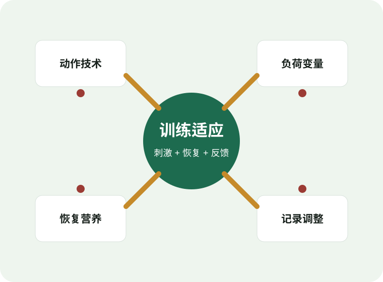

目标与人群
明确增肌、力量、健康、体态或运动表现；评估训练史、伤病、器械、时间和恢复能力。
Evidence-based strength training
面向训练爱好者的实践型知识架构：用权威指南建立底层原则，用清晰路径连接动作、计划、恢复和进阶决策。

Knowledge architecture
力量训练不是动作清单，而是由目标、刺激、技术、恢复和反馈构成的系统。
明确增肌、力量、健康、体态或运动表现；评估训练史、伤病、器械、时间和恢复能力。
深蹲、髋铰链、推、拉、弓步、旋转控制和负重行走，比孤立动作名称更适合组织训练。
频率、强度、组数、次数、动作速度、组间休息和接近力竭程度共同决定刺激。
睡眠、蛋白质、总能量、压力管理和训练间隔决定刺激能否转化为适应。
记录重量、次数、RPE、疼痛、睡眠和体重趋势，用数据判断加量、维持或减量。
Training pathway
每个阶段只解决当前最重要的问题：先学动作，再积累容量，最后管理疲劳和周期化。
Prescription
选择目标和训练天数，得到一个可执行的周模板。实际训练应根据技术质量、恢复和疼痛反馈调整。
Exercise library
Evidence
本网站以公共健康指南、运动医学立场声明、力量体能教材体系和同行评议综述为基础，避免把单一网红经验包装成通用规律。
成人身体活动指南均强调每周至少 2 天进行涉及主要肌群的肌肉强化活动，并结合有氧活动获得整体健康收益。
阻力训练进阶模型强调渐进超负荷、训练特异性、个体化、周期化，以及通过强度、容量和频率调控适应。
力量体能体系通常以动作技术、测试评估、训练处方、恢复和运动表现转化为主线，适合搭建专业训练知识框架。
疼痛、既往损伤、慢性疾病、孕期或术后恢复人群，应优先获得医疗或认证专业人士评估。